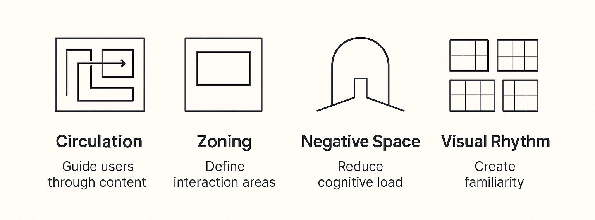

Project Overview: Framing the Redesign
One of my key contributions at Sprinklr was leading the redesign of the Community platform, launched in May 2024. I approached the platform as a spatial experience, using my background in architecture to rethink the structure and flow of the interface. By treating digital elements like physical forms, I applied principles of circulation to guide users seamlessly through content, and used zoning strategies to clearly define interaction areas. Negative space became a critical tool to reduce cognitive load, allowing users to focus and breathe within the layout. I also introduced visual rhythm through consistent patterns and modular components, creating familiarity and coherence across the experience. This architectural approach helped us transform a cluttered, dated platform into a clean, intuitive, and engaging community environment. Let me walk you through how we reshaped this digital space.
